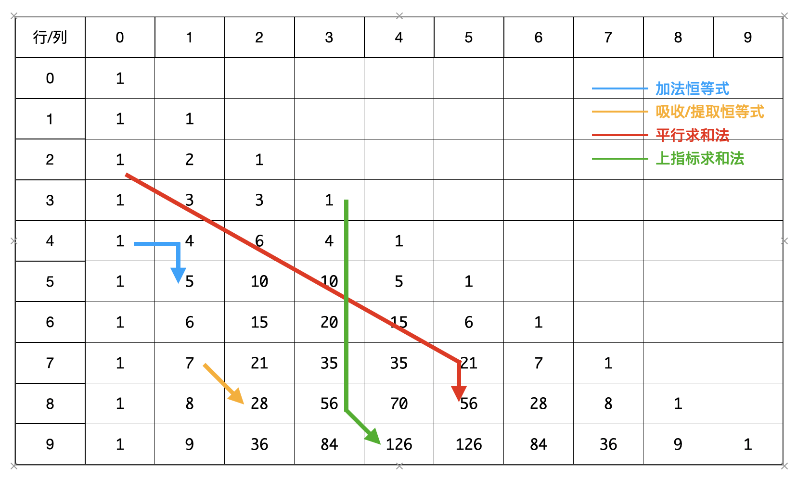

[具体数学]第五章·二项式系数（第一部分）
第五章·二项式系数分8节，包含基本恒等式、生成函数、超几何函数、机械求和法等内容。这是笔记第一部分，包括基本恒等式、一些练习、处理的技巧，以及牛顿级数、二项式反演。
基本恒等式
二项式系数
\[ \binom{r}{k}=\begin{cases}\frac{r(r-1)\cdots(r-k+1)}{k(k-1)\cdots 1}=\frac{r^{\underline{k}}}{k!},&k\geqslant 0\\0,&k<0\end{cases} \] 注意上式中，\(k\in \mathbb Z\)，而 \(r\) 可以是任意实数（甚至复数）。
- 只有当 \(r,k\) 取非负整数时，\(\binom{r}{k}\) 才有组合解释。但是，鉴于二项式系数还有许多其他用途，所以将范围推广至实数；
- 可以把 \(\binom{r}{k}\) 视为 \(r\) 的 \(k\) 次多项式，此观点常常有用；
- 下指标 \(k\) 是非整数的情形应用很少，故这里不考虑。
最重要的十个二项式系数恒等式
\[ \color{purple}{\begin{align} &\binom{n}{k}=\frac{n!}{k!(n-k)!},\quad 整数\;n\geqslant k\geqslant 0&&阶乘展开式\\ &\binom{n}{k}=\binom{n}{n-k},\quad 整数\;n\geqslant0,k\in\mathbb{Z}&&对称恒等式\\ &\binom{r}{k}=\frac{r}{k}\binom{r-1}{k-1},\quad 整数\;k\neq 0&&吸收/提取恒等式\\ &\binom{r}{k}=\binom{r-1}{k}+\binom{r-1}{k-1},\quad k\in\mathbb{Z}&&加法恒等式\\ &\binom{r}{k}=(-1)^k\binom{k-r-1}{k},\quad k\in\mathbb{Z}&&上指标反转\\ &\binom{r}{m}\binom{m}{k}=\binom{r}{k}\binom{r-k}{m-k},\quad m,k\in\mathbb{Z}&&三项式版恒等式\\ &\sum_{k}\binom{r}{k}x^ky^{r-k}=(x+y)^r，整数\;r\geqslant 0\;或者\; \left|\frac{x}{y}\right|<1&&二项式定理\\ &\sum_{k\leqslant n}\binom{r+k}{k}=\binom{r+n+1}{n},\quad n\in\mathbb{Z}&&平行求和法\\ &\sum_{0\leqslant k\leqslant n}\binom{k}{m}=\binom{n+1}{m+1},\quad 整数\;m,n\geqslant 0&&上指标求和法\\ &\sum_{k}\binom{r}{k}\binom{s}{n-k}=\binom{r+s}{n},\quad n\in\mathbb{Z}&&范德蒙德卷积公式 \end{align}} \]
其中，范德蒙德卷积公式有如下推论： \[ \color{blue}{\begin{align} &\sum_k\binom{l}{m+k}\binom{s}{n+k}=\binom{l+s}{l-m+n}&&,整数\;l\geqslant 0,\,m,n\in\mathbb{Z}\\ &\sum_k\binom{l}{m+k}\binom{s+k}{n}(-1)^k=(-1)^{l+m}\binom{s-m}{n-l}&&,整数\;l\geqslant 0,\,m,n\in\mathbb{Z}\\ &\sum_{k\leqslant l}\binom{l-k}{m}\binom{s}{k-n}(-1)^k=(-1)^{l+m}\binom{s-m-1}{l-m-n}&&,整数\;l,m,n\geqslant 0\\ &\sum_{-q\leqslant k\leqslant l}\binom{l-k}{m}\binom{q+k}{n}=\binom{l+q+1}{m+n+1}&&,整数\;m,n\geqslant0,整数\;l+q\geqslant 0 \end{align}} \]
注意对称性+上指标反转可以把上/下指标中的变量给移动到下/上指标去。上述的推论都可以通过不断进行对称和反转得到。
上述恒等式的证明
吸收/提取恒等式： \[ \binom{r}{k}=\frac{r^{\underline{k}}}{k!}=\frac{r}{k}\frac{(r-1)^{\underline{k-1}}}{(k-1)!}=\frac{r}{k}\binom{r-1}{k-1} \]
在杨辉三角中，即 \((r,k)\) 的数等于 \((r-1,k-1)\) 的数乘上 \(r/k\).
加法恒等式：代数证明略，组合证明：先设 \(r\in\mathbb{Z}_+\)，从 \(r\) 个人中选取 \(k\) 个人，等价于设一个特殊的人，选他+从 \(r-1\) 人中选 \(k-1\) 个，不选他+从 \(r-1\) 人中选 \(k\) 个。推广到实数，由于等号两边都是 \(r\) 的 \(k\) 次多项式，它们的差也是 \(r\) 的 \(k\) 次多项式，最多有 \(k\) 个零点，或者恒为零；然而易知这个等式在 \(\mathbb{Z^*}\) 内恒成立，已经有多于 \(k\) 个零点了，所以二者之差恒为零，即等式在 \(\mathbb{R}\) 上恒成立。\(\square\)
上述过程称为多项式推理法，非常重要！
在杨辉三角中，即上两个相加等于下面一个。
上指标反转： \[ (-1)^k\binom{k-r-1}{k}=(-1)^k\frac{(k-r-1)^{\underline k}}{k!}=\frac{r^{\underline k}}{k!}=\binom{r}{k} \]
三项式版恒等式： \[ \begin{align} &\binom{r}{m}\binom{m}{k}=\frac{r!}{m!(r-m)!}\frac{m!}{k!(m-k)!}=\frac{r!}{(r-m)!k!(m-k)!}\\ &\binom{r}{k}\binom{r-k}{m-k}=\frac{r!}{k!(r-k)!}\frac{(r-k)!}{(m-k)!(r-m)!}=\frac{r!}{k!(m-k)!(r-m)!} \end{align} \] 故二者相等。
平行求和法： \[ \begin{align} \sum_{k\leqslant n}\binom{r+k}{k}&=\binom{r}{0}+\binom{r+1}{1}+\cdots+\binom{r+n}{n}\\ &=\binom{r}{-1}+\binom{r}{0}+\binom{r+1}{1}+\cdots+\binom{r+n}{n}&&因为\;\binom{r}{-1}=0\\ &=\binom{r+1}{0}+\binom{r+1}{1}+\cdots+\binom{r+n}{n}&&前两项加法恒等式合并\\ &=\cdots&&不断合并\\ &=\binom{r+n+1}{n} \end{align} \]
在杨辉三角中，即一条斜 \(45^\circ\) 向下的线上的所有值加起来等于末尾那个数的下一行的数。
上指标求和法： \[ \begin{align} \sum_{0\leqslant k\leqslant n}\binom{k}{m}&=\binom{0}{m}+\binom{1}{m}+\cdots+\binom{n}{m}\\ &=\binom{0}{m+1}+\binom{0}{m}+\binom{1}{m}+\cdots+\binom{n}{m}&&因为\;\binom{0}{m+1}=0\\ &=\binom{1}{m+1}+\binom{1}{m}+\cdots+\binom{n}{m}&&前两项加法恒等式合并\\ &=\cdots&&不断合并\\ &=\binom{n+1}{m+1} \end{align} \]
在杨辉三角中，即一条竖线上的 \(n\) 个值加起来等于末尾那个值的右下角的值。
范德蒙德卷积公式：组合证明：先设 \(r,s\in\mathbb{Z}_+\)，左式是从 \(r\) 个男生中选 \(k\) 个，加上从 \(s\) 个女生中选 \(n-k\) 个，枚举这个 \(k\)，右式是从 \(r+s\) 个人中选 \(n\) 个人，二者显然相等。然后再由前面提及的多项式推理法推广到 \(\mathbb{R}\) 上。
我的批注：上面许多恒等式都可以在杨辉三角中形象化地记忆，其证明也在杨辉三角中有直观体现。

除此以外，关于二项式系数的恒等式还有茫茫多……
基本练习
问题1：比值的和式
求 \[ \sum_{k=0}^m\frac{\binom{m}{k}}{\binom{n}{k}},\quad整数\;n\geqslant m\geqslant 0 \] 的封闭形式。
解：由三项式恒等式 \(\binom{r}{m}\binom{m}{k}=\binom{r}{k}\binom{r-k}{m-k}\)，可知：\(\binom{m}{k}/\binom{n}{k}=\binom{n-k}{m-k}/\binom{n}{m}\)，于是： \[ \begin{align} \sum_{k=0}^m\frac{\binom{m}{k}}{\binom{n}{k}}&=\sum_{k=0}^m\frac{\binom{n-k}{m-k}}{\binom{n}{m}}\\ &=\frac{1}{\binom{n}{m}}\sum_{k=0}^m\binom{n-k}{m-k}\\ &=\frac{1}{\binom{n}{m}}\sum_{t=0}^m\binom{n-m+t}{t}&&令\;t=m-k\\ &=\frac{1}{\binom{n}{m}}\binom{n+1}{m}&&平行求和法\\ &=\frac{n+1}{n+1-m} \end{align} \]
上述过程怎么想到的呢？首先运用三项式恒等式可以使分母不含 \(k\)，得以提出求和号；然后，考虑 \(\sum\limits_{k=0}^m\binom{n-k}{m-k}\) 在杨辉三角中的形态，是一个斜 \(45^\circ\) 向下的形态，于是转换到平行求和法。
问题2：来自排序文献
求 \[ T=\sum_{k=0}^nk\binom{m-k-1}{m-n-1}/\binom{m}{n} \] 的封闭形式。
解：
设 \(S=\sum\limits_{k=0}^nk\binom{m-k-1}{m-n-1}\)，\(T\) 即是 \(S/\binom{m}{n}\)，下面计算 \(S\)： \[ \begin{align} S&=\sum_{k=0}^nk\binom{m-k-1}{m-n-1}\\ &=\sum_{k=0}^nm\binom{m-k-1}{m-n-1}-\sum_{k=0}^n(m-k)\binom{m-k-1}{m-n-1}\\ &=m\sum_{k=0}^{n}\binom{m-k-1}{m-n-1}-(m-n)\sum_{k=0}^n\binom{m-k}{m-n}&& 对后者使用吸收恒等式\\ &=mA-(m-n)B \end{align} \] 其中， \[ \begin{align} A&=\sum_{k=0}^n\binom{m-k-1}{m-n-1}\\ &=\sum_{t=m-n-1}^{m-1}\binom{t}{m-n-1}&&令\;t=m-k-1\\ &=\binom{m}{m-n}&&实施上指标求和法\\ \\ B&=\sum_{k=0}^n\binom{m-k}{m-n}\\ &=\sum_{t=m-n}^m\binom{t}{m-n}&&令\;t=m-k\\ &=\binom{m+1}{m-n+1}&&实施上指标求和法 \end{align} \]
于是乎： \[ \begin{align} S&=mA-(m-n)B\\ &=m\binom{m}{m-n}-(m-n)\binom{m+1}{m-n+1}\\ &=\binom{m}{m-n}\left[m-(m-n)\frac{m+1}{m-n+1}\right]&&吸收恒等式\\ &=\frac{m!}{(m-n+1)!(n-1)!}=\binom{m}{n-1} \end{align} \]
故 \[ T=S/\binom{m}{n}=\frac{m!}{(m-n+1)!(n-1)!}\cdot\frac{n!(m-n)!}{m!}=\frac{n}{m-n+1} \]
上述解答的思考过程：首先，\(S\) 中二项式系数外有个 \(k\)，自然想到用吸收恒等式把 \(k\) 给吸进去，为了应用吸收恒等式，把原式拆成了两部分；观察 \(A,B\) 的形态，在杨辉三角中，它们都是某一竖条相加，自然转换成上指标求和法求解。
问题3：来自以往的考试题
求 \[ Q_n=\sum_{k\leqslant 2^n}\binom{2^n-k}{k}(-1)^k \] 解：似乎没有什么公式可供使用，我们考虑求出它的递归式。然而，\(n\) 总是以 \(2\) 的幂次跳跃，在杨辉三角中相距 \(2^k\) 行数的两个数也不好找什么关系（我们知道的关系时加法恒等式，给定相邻两行的关系）。不过这给我们启发，我们不妨考虑一个更普适的问题： \[ R_m=\sum_{k\leqslant m}\binom{m-k}{k}(-1)^k \] 那么 \(Q_n=R_{2^n}\). 若解得 \(R_m\)，则自然解得 \(Q_n\). \[ \begin{align} R_m&=\sum_{k\leqslant m}\binom{m-k}{k}(-1)^k\\ &=\sum_{k\leqslant m}\binom{m-k-1}{k}(-1)^k+\sum_{k\leqslant m}\binom{m-k-1}{k-1}(-1)^k\\ &=\left[\sum_{k\leqslant m-1}\binom{m-k-1}{k}(-1)^k+\binom{-1}{m}(-1)^m\right]+\left[\sum_{k\leqslant m-1}\binom{m-k-2}{k}(-1)^{k+1}\right]\\ &=\left[R_{m-1}+{(-1)}^{2m}\right]+\left[-\sum_{k\leqslant m-2}\binom{m-2-k}{k}(-1)^{k}+\binom{-1}{m-1}(-1)^{m}\right]\\ &=R_{m-1}+1-R_{m-2}+(-1)^{2m-1}\\&=R_{m-1}-R_{m-2} \end{align} \]
于是 \(R_m=R_{m-1}-R_{m-2}=(R_{m-2}-R_{m-3})-R_{m-2}=-R_{m-3}=R_{m-6}\)，以 \(6\) 为周期，故： \[ R_m=\begin{cases}1&m\bmod 6=0\\1&m\bmod 6=1\\0&m\bmod 6=2\\-1&m\bmod 6=3\\-1&m\bmod 6=4\\0&m\bmod 6=5\\\end{cases} \] 故： \[ Q_n=R_{2^n}=\begin{cases}1&n=0\\0&n\;奇数\\-1&n\;偶数且\;n>0\end{cases} \]
当找不到公式予以化简时，不妨考虑寻找递归式。
问题4：包含两个二项式系数的和式
求 \[ \sum_{k=0}^nk\binom{m-k-1}{m-n-1}\quad,整数\;m>n\geqslant 0 \] 的封闭形式。
解：这个就是问题2中的 \(S\)，不过我们换一个角度看它。视 \(k\) 为 \(\binom{k}{1}\)，再根据范德蒙德卷积公式的推论公式：\(\sum\limits_{-q\leqslant k\leqslant l}\binom{l-k}{m}\binom{q+k}{n}=\binom{l+q+1}{m+n+1}\)，有： \[ \sum_{k=0}^n\binom{k}{1}\binom{m-k-1}{m-n-1}=\binom{m}{m-n+1} \] > 注意应用推论公式的条件是 \(0\leqslant k < m\)，这里只加到了 \(n\) 仍是正确的，是因为当 \(k>n\) 时，\(m-k-1<m-n-1\)，于是 \(\binom{m-k-1}{m-n-1}=0\).
问题5：有三个因子的和式
求 \[ \sum_k\binom{n}{k}\binom{s}{k}k\quad,整数\;n\geqslant 0 \] 的封闭形式。
解： \[ \begin{align} \sum_k\binom{n}{k}\binom{s}{k}k&=\sum_{k}\binom{n}{k}\binom{s-1}{k-1}s&&提取恒等式\\ &=s\sum_k\binom{n}{n-k}\binom{s-1}{k-1}&&对称性\\ &=s\binom{n+s-1}{n-1}&&范德蒙德卷积 \end{align} \]
如果把 \(k\) 吸进 \(\binom{n}{k}\)，得到的 \(\binom{n-1}{k-1}\) 中 \(n-1\) 有可能是负的，则不能运用对称性继续推导了（一定注意对称性要求上指标是正整数）。
问题6：一个令人惊悚的和式
求 \[ \sum_{k\geqslant 0}\binom{n+k}{2k}\binom{2k}{k}\frac{(-1)^k}{k+1}\quad,整数\;n\geqslant k \] 的封闭形式。
解： \[ \begin{align} \sum_{k\geqslant 0}\binom{n+k}{2k}\binom{2k}{k}\frac{(-1)^k}{k+1}&=\sum_{k\geqslant 0}\binom{n+k}{k}\binom{n}{k}\frac{(-1)^k}{k+1}&&三项式版恒等式\\ &=\sum_{k\geqslant 0}\binom{n+k}{k}\binom{n+1}{k+1}\frac{1}{n+1}(-1)^k&&吸收恒等式\\ &=\frac{1}{n+1}\sum_{k\geqslant0}\binom{-n-1}{k}\binom{n+1}{k+1}&&上指标反转\\ &=\frac{1}{n+1}\sum_{k\geqslant 0}\binom{-n-1}{k}\binom{n+1}{n-k}&&对称性\\ &=\frac{1}{n+1}\binom{0}{n}=[n=0] \end{align} \]
再三强调对称性只能应用在上指标是正整数的情形下，上面推到过程如果对 \(\binom{n+k}{k}\) 使用了对称性，会得到错误的结果（恒为 \(0\)）。
问题7：新的障碍
求 \[ \sum_{k\geqslant 0}\binom{n+k}{m+2k}\binom{2k}{k}\frac{(-1)^k}{k+1}\quad,整数\;m,n>0 \] 的封闭形式，
解： \[ \begin{align} &\sum_{k\geqslant 0}\binom{n+k}{m+2k}\binom{2k}{k}\frac{(-1)^k}{k+1}\\ =&\sum_{k\geqslant 0}\sum_{0\leqslant j\leqslant n+k-1}\binom{n+k-1-j}{2k}\binom{j}{m-1}\binom{2k}{k}\frac{(-1)^k}{k+1}&&逆用范德蒙德卷积公式的推论\\ =&\sum_{j\geqslant 0}\binom{j}{m-1}\sum_{k\geqslant j-n+1\\k\geqslant 0}\binom{n+k-1-j}{2k}\binom{2k}{k}\frac{(-1)^k}{k+1}&&求和号换序\\ =&\sum_{0\leqslant j< n}\binom{j}{m-1}[n=j+1]&&上一题结论\\ =&\binom{n-1}{m-1} \end{align} \]
解题思路：如果 \(m=0\)，就是上一题了，可惜这个 \(m\) 使得三项式版恒等式无法使用，后续也就难以进行了。既然这个 \(m\) 这么讨厌，那就让它消失，精彩之处在于逆用范德蒙德卷积公式的推论达到这个效果。
问题8：不同的障碍
求 \[ \sum_{k\geqslant0}\binom{n+k}{2k}\binom{2k}{k}\frac{(-1)^k}{k+1+m}\quad,整数\;m,n\geqslant 0 \] 的封闭形式。
解：
\[ \begin{align} \sum_{k\geqslant0}\binom{n+k}{2k}\binom{2k}{k}\frac{(-1)^k}{k+1+m}&=\sum_{k\geqslant 0}\binom{n+k}{k}\binom{n}{k}\frac{(-1)^k}{k+1+m}&&三项式版恒等式 \end{align} \]
根据问题1的结论，\(\sum\limits_{k=0}^m{\binom{m}{k}}{\binom{n}{k}}^{-1}=\frac{n+1}{n+1-m},\quad整数\;n\geqslant m\geqslant 0\)，于是 \(\frac{1}{k+1+m}=\frac{1}{k+1}\sum\limits_{j=0}^m\binom{m}{j}{\binom{-k-2}{j}}^{-1}\). 带入上式得： \[ \begin{align} 原式&=\sum_{k\geqslant 0}\sum\limits_{j=0}^m\binom{n+k}{k}\binom{n}{k}\frac{(-1)^k}{k+1}\binom{m}{j}{\binom{-k-2}{j}}^{-1}\\ &=\sum_{j=0}^m\sum_{k\geqslant 0}\binom{n+k}{k}\binom{n+1}{k+1}\frac{(-1)^k}{n+1}\binom{m}{j}{\binom{-k-2}{j}}^{-1}&&吸收恒等式 \end{align} \] 接下来作者就把它展开成阶乘，然后写回二项式系数了……可我实在是没看出来作者怎么做到的，所以这个坑先留着吧……
处理的技巧
技巧1：取一半
加倍公式（duplication formula）： \[ \color{blue}{r^{\underline k}{\left(r-\frac{1}{2}\right)}^{\underline k}=(2r)^{\underline {2k}}/2^{2k}\quad,整数\;k\geqslant 0} \] 证明： \[ \begin{align} r^{\underline k}{\left(r-\frac{1}{2}\right)}^{\underline k} &=r(r-1)\cdots (r-k+1)\cdot \left(r-\frac{1}{2}\right)\left(r-\frac{3}{2}\right)\cdots\left(r-\frac{2k-1}{2}\right)\\ &=r\left(r-\frac{1}{2}\right)(r-1)\left(r-\frac{3}{2}\right)\cdots \left(r-\frac{2k-1}{2}\right)(r-k+1)\\ &=2r(2r-1)(2r-2)(2r-3)\cdots(2r-2k+1)(2r-2k+2)/2^{2k}\\ &={(2r)}^{\underline {2k}}/2^{2k} \end{align} \] 证毕。
对加倍公式两边除以 \({k!}^2\)，得到： \[ \color{purple}{\binom{r}{k}\binom{r-\frac{1}{2}}{k}=\binom{2r}{2k}\binom{2k}{k}/2^{2k}\quad,k\in\mathbb{Z}}\tag{1} \] 如果令 \(k=r=n\)，得到： \[ \color{purple}{\binom{n-\frac{1}{2}}{n}=\binom{2n}{n}/{2^{2n}}\quad,n\in\mathbb{Z}}\tag{2} \] 对上式进行反转上指标，得到： \[ \color{purple}{(-1)^n\binom{-\frac{1}{2}}{n}=\binom{2n}{n}/2^{2n}}\implies\color{purple}{\binom{-\frac{1}{2}}{n}={\left(-\frac{1}{4}\right)}^n\binom{2n}{n}\quad,n\in\mathbb{Z}}\tag{3} \] 在 \((1)\) 式中，设 \(r=\frac{n}{2}\)，对所有 \(k\in\mathbb{Z}\) 求和，得到： \[ \color{purple}{\begin{align} \sum_k\binom{n}{2k}\binom{2k}{k}2^{-2k}&=\sum_k\binom{\frac{n}{2}}{k}\binom{\frac{n-1}{2}}{k}\\&=\sum_k\binom{\frac{n}{2}}{\frac{n}{2}-k}\binom{\frac{n-1}{2}}{k}\;或\;\sum_k\binom{\frac{n}{2}}{k}\binom{\frac{n-1}{2}}{\frac{n-1}{2}-k}&&选整数那个应用对称性\\&=\binom{n-\frac{1}{2}}{\frac{n}{2}}\;或\;\binom{n-\frac{1}{2}}{\frac{n-1}{2}}&&范德蒙德卷积\\&=\binom{n-\frac{1}{2}}{\left\lfloor\frac{n}{2}\right\rfloor} \end{align}}\tag{4} \] 由范德蒙德卷积我们知道：\(\sum\limits_k\binom{-1/2}{k}\binom{-1/2}{n-k}=\binom{-1}{n}=(-1)^n\)，如果把 \((3)\) 式结论代入得到： \[ \binom{-1/2}{k}\binom{-1/2}{n-k}=\left(-\frac{1}{4}\right)^n\binom{2k}{k}\binom{2n-2k}{n-k} \] 于是我们有： \[ \color{purple}{\sum_k\binom{2k}{k}\binom{2n-2k}{n-k}=4^n\quad,\;整数\;n\geqslant 0}\tag{5} \]
这个技巧常常怎么使用呢？我们对形如 \(\binom{2k}{k}\) 的二项式系数特别不爽，因为无论是对称性还是上指标反转都无法将其处理为上下指标只有一边含有 \(k\) 的形式。还记得问题6、7、8中，我们是靠着三项式版恒等式把它干掉的。现在我们多了一种工具，即把 \(\binom{2k}{k}\) 写成 \(\binom{n-1/2}{k}\) 的式子，其中 \(n\) 是某个适当的整数（常取 \(0,1,k\)）。核心公式： \[ \binom{2k}{k}=2^{2k}\binom{r}{k}\binom{r-1/2}{k}\binom{2r}{2k}^{-1} \]
技巧2：高阶差分
差分： \[ \Delta f(x)=f(x+1)-f(x) \] 高阶差分： \[ \begin{align} &\Delta^2f(x)=\Delta f(x+1)-\Delta f(x)=f(x+2)-2f(x+1)+f(x)\\ &\Delta^3f(x)=\Delta^2f(x+1)-\Delta^2f(x)=f(x+3)-3f(x+2)+3f(x+1)-f(x)\\ &\cdots\\ &\color{purple}{\Delta^nf(x)=\sum_{k}\binom{n}{k}(-1)^{n-k}f(x+k)} \end{align} \] 利用算子证明：\(E\) 移位算子，\(1\) 恒等算子，那么差分算子 \(\Delta=E-1\)，对算子应用二项式定理： \[ \Delta^n=(E-1)^n=\sum_k\binom{n}{k}E^k(-1)^{n-k} \] 证毕。
应用1（负的下降幂的一个情形）
考虑函数 \(f(x)=(x-1)^{\underline {-1}}=\frac{1}{x}\)，则根据 \(\Delta x^{\underline n}=nx^{\underline {n-1}}\)，有： \[ \Delta^n\left((x-1)^{\underline{-1}}\right)=(-1)^n\frac{n!}{x(x+1)\cdots(x+n)} \] 代入高阶差分式有： \[ \begin{align} &\sum_k\binom{n}{k}(-1)^{n-k}\frac{1}{x+k}=(-1)^n\frac{n!}{x(x+1)\cdots (x+n)}\\ \implies&\color{purple}{\sum_k\binom{n}{k}\frac{(-1)^k}{x+k}=\frac{n!}{x(x+1)\cdots(x+n)}=x^{-1}{\binom{x+n}{n}}^{-1}\quad,x\neq0,-1,\cdots,-n} \end{align} \] 两个角度看，我们对和式求出了封闭形式，或者说对 \(n!/x(x+1)\cdots(x+n)\) 求得了一个部分分式的展开形式。
应用2（牛顿级数）
设 \(f(x)=a_dx^d+a_{d-1}x^{d-1}+\cdots+a_1x^1+a_0x^0\) 是一个 \(d\) 次多项式，则 \(\Delta f(x)\) 是 \(d-1\) 次多项式，……，\(\Delta^df(x)\) 是一个常数，对于 \(n>d\)，\(\Delta^nf(x)=0\).
根据后面章节的内容，任何幂次都能表示成下降幂的和式，从而 \(f(x)\) 可以写作：\(f(x)=b_dx^{\underline d}+b_{d-1}x^{\underline{d-1}}+\cdots b_1x^{\underline 1}+b_0x^{\underline 0}\). 又设 \(c_k=k!\cdot b_k\)，则有： \[ f(x)=c_d\binom{x}{d}+c_{d-1}\binom{x}{d-1}+\cdots+c_1\binom{x}{1}+c_0\binom{x}{0} \] 即任何多项式都可以表示成二项式系数的倍数之和。该展开式称为牛顿级数。
由加法恒等式： \[ \Delta\binom{x}{k}=\binom{x+1}{k}-\binom{x}{k}=\binom{x}{k-1} \] 可得牛顿级数的 \(n\) 阶差分为： \[ \Delta^nf(x)=c_d\binom{x}{d-n}+c_{d-1}\binom{x}{d-1-n}+\cdots+c_1\binom{x}{1-n}+c_0\binom{x}{-n} \] 令 \(x=0\)，除了 \(k=n\) 的项 \(c_k\binom{x}{k-n}=c_k\)，其他项都是 \(0\)，于是： \[ \Delta^nf(0)=\begin{cases}c_n&n\leqslant d\\0&n>d\end{cases} \] 因此牛顿级数写作： \[ \color{purple}{f(x)=\Delta^df(0)\binom{x}{d}+\Delta^{d-1}f(0)\binom{x}{d-1}+\cdots+\Delta f(0)\binom{x}{1}+f(0)\binom{x}{0}=\sum_{k=0}^d\Delta^kf(0)\binom{x}{k}} \] 我们可以对上式进行推广，如果 \(x\) 是非负整数，显然把它写成无穷项也是没有问题的（后面的都是 \(0\)），但是如果 \(x\) 不是非负整数，无穷级数是否收敛，收敛到的值是否是原来的值都是问题。不过我们还是将其写出为好： \[ \color{purple}{\begin{align}f(x)&=f(0)\binom{x}{0}+\Delta f(0)\binom{x}{1}+\Delta^2f(0)\binom{x}{2}+\cdots\\&=\frac{f(0)}{0!}x^{\underline 0}+\frac{\Delta f(0)}{1!}x^{\underline 1}+\frac{\Delta^2f(0)}{2!}x^{\underline 2}+\cdots\end{align}} \] 想到了什么？没错，正式麦克劳林级数： \[ f(x)=\frac{f(0)}{0!}x^0+\frac{f'(0)}{1!}x+\frac{f''(0)}{2!}x^2+\cdots \] 如果设 \(f(x)=g(x+a)\)，我们可以得到类比泰勒级数的结果： \[ \color{purple}{g(x+a)=\frac{g(a)}{0!}x^{\underline 0}+\frac{\Delta g(a)}{1!}x^{\underline 1}+\frac{\Delta^2g(a)}{2!}x^{\underline 2}+\cdots} \] 换句话说，牛顿级数是泰勒级数的离散形式。
应用3（\(\textbf{James Stirling}\) 对阶乘的推广）
\(\textbf{James Stirling}\) 利用牛顿级数把阶乘函数推广到非整数的值，他将 \(\ln x!\) 展开： \[ \ln x!=\sum_n s_n\binom{x}{n} \] 根据牛顿级数的内容和高阶差分公式： \[ \begin{align} s_n&=\Delta^n (\ln x!)|_{x=0}\\ &=\Delta^{n-1}(\ln (x+1)!-\ln x!)|_{x=0}\\ &=\Delta^{n-1}\ln(x+1)|_{x=0}\\ &=\sum_{k}\binom{n-1}{k}(-1)^{n-1-k}\ln (x+k+1)|_{x=0}\\ &=\sum_k\binom{n-1}{k}(-1)^{n-1-k}\ln(k+1) \end{align} \]
上述推导中，先使用了一个差分把阶乘干掉了，再套用高阶差分公式，着实妙哉！
于是，\(s_0=s_1=0,s_2=\ln 2,s_3=\ln\frac{3}{4},s_4=\ln\frac{32}{27},\cdots\). 我们得到的级数可以证明是收敛的，这样代入非整数的值 \(x\) 进入 \(\ln x!\) 的展开式就可以知道 \(x!\) 的值了。
技巧3：反演
二项式反演： \[ \color{purple}{g(n)=\sum_k\binom{n}{k}(-1)^kf(k)\iff f(n)=\sum_k\binom{n}{k}(-1)^kg(k)} \] 证明：由于 \(f\) 与 \(g\) 完全对称，只需要证明必要性。已知 \(g(n)=\sum\limits_k\binom{n}{k}(-1)^kf(k)\)，那么： \[ \begin{align} \sum_k\binom{n}{k}(-1)^kg(k)&=\sum_k\binom{n}{k}(-1)^k\sum_j\binom{k}{j}(-1)^jf(j)\\ &=\sum_jf(j)\sum_k\binom{n}{k}\binom{k}{j}(-1)^{j+k}&&求和号换序\\ &=\sum_jf(j)\sum_k(-1)^{j+k}\binom{n}{j}\binom{n-j}{k-j}&&三项式版恒等式\\ &=\sum_jf(j)\binom{n}{j}\sum_t(-1)^t\binom{n-j}{t}&&令\;t=k-j\\ &=\sum_jf(j)\binom{n}{j}(1-1)^{n-j}&&二项式定理\\ &=\sum_jf(j)\binom{n}{j}[n=j]\\ &=f(n) \end{align} \] 证毕。
另一个形式： \[ \color{purple}{g(n)=\sum_k\binom{n}{k}f(k)\iff f(n)=(-1)^n\sum_k\binom{n}{k}(-1)^kg(k)} \] 只需要把 \((-1)^kf(k)\) 视为一个整体就可以得到上式。
应用（足球胜利问题）
\(n\) 个球迷把他们的帽子抛向空中，这些帽子随机落下，使得每个球迷都随机得到一个帽子，有多少种方式 \(h(n,k)\) 使恰好 \(k\) 个球迷拿到他们自己的帽子？
\(D_n=h(n,0)\) 就是著名的错排问题。
显然，\(h(n,k)=\binom{n}{k}h(n-k,0)\)，即选出 \(k\) 人拿自己的帽子，其余 \(n-k\) 人都不是自己的帽子。
一个简单的观察是，对于所有 \(k\)，\(h(n,k)\) 的和就是所有可能的排列，即 \(n!\)，所以我们有： \[ \sum_k h(n,k)=\sum_k\binom{n}{k}h(n-k,0)=\sum_k\binom{n}{n-k}h(k,0)=\sum_k\binom{n}{k}h(k,0)=n! \]
实施二项式反演，得到： \[ D_n=h(n,0)=(-1)^n\sum_k\binom{n}{k}(-1)^kk! \] 化简该式： \[ \begin{align} D_n&=(-1)^n\sum_k\binom{n}{k}(-1)^kk!\\ &=\sum_{k=0}^n\frac{n!}{(n-k)!}(-1)^{n+k}\\ &=n!\sum_{k=0}^n\frac{(-1)^k}{k!}\\ \end{align} \]
我们知道：\(e^{-x}=\sum\limits_{n=0}^\infty\frac{(-x)^n}{n!}\implies e^{-1}=\sum\limits_{n=0}^\infty\frac{(-1)^n}{n!}\)，于是 \(D_n\) 和 \(n!/e\) 之间的差值是 \(n!\sum\limits_{k=n+1}^\infty\frac{(-1)^k}{k!}=(-1)^{n+1}\left(\frac{1}{n+1}-\frac{1}{(n+1)(n+2)}+\frac{1}{(n+1)(n+2)(n+3)}-\cdots\right)\)，括号中的值介于 \(\frac{1}{n+1}\) 和 \(\frac{1}{n+1}-\frac{1}{(n+1)(n+2)}=\frac{1}{n+2}\) 之间，所以在 \(n>0\) 的时候，我们只需要将 \(n!/e\) 四舍五入即可得到 \(D_n\) 的封闭形式，即： \[
\color{purple}{D_n=\left\lfloor\frac{n!}{e}+\frac{1}{2}\right\rfloor+[n=0]}
\]
从上述推导中的 \(D_n=n!\sum\limits_{k=0}^n\frac{(-1)^k}{k!}\) 可以得到：\(D_n-nD_{n-1}=n!\sum\limits_{k=0}^n\frac{(-1)^k}{k!}-n!\sum\limits_{k=0}^{n-1}\frac{(-1)^k}{k!}=n!\frac{(-1)^n}{n!}=(-1)^n\)，于是我们得到 \(D_n\) 的一个递归式： \[ \color{purple}{D_n=nD_{n-1}+(-1)^n} \] 如果把 \(D_{n-1}\) 也按照该递归式展开，我们可以得到一个更常见（大家应该已经很熟悉）的递归式： \[ \color{purple}{D_n=(n-1)(D_{n-1}+D_{n-2})} \]